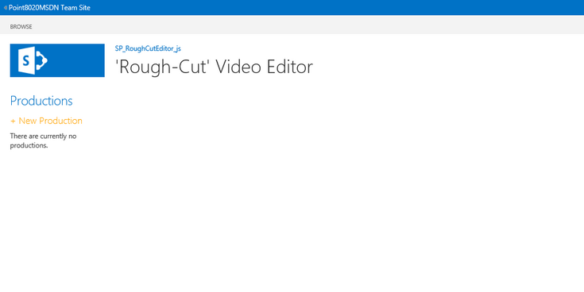
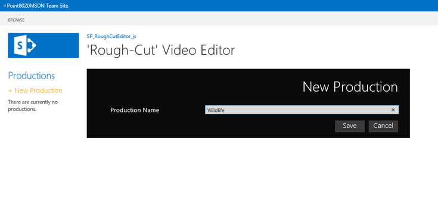
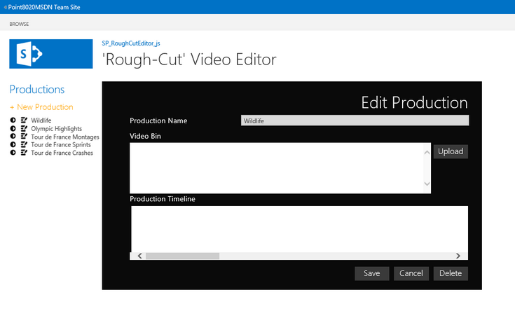
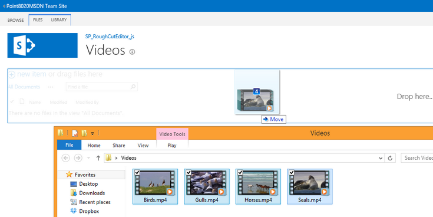
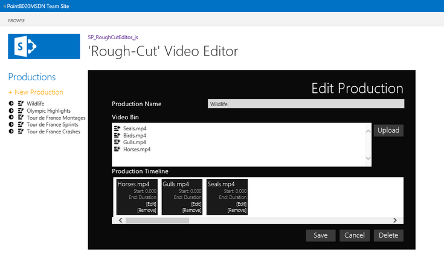
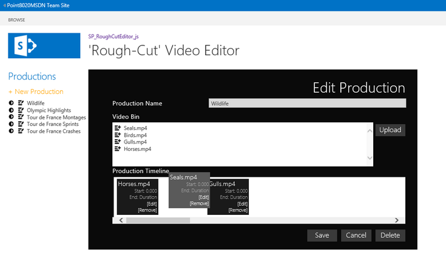
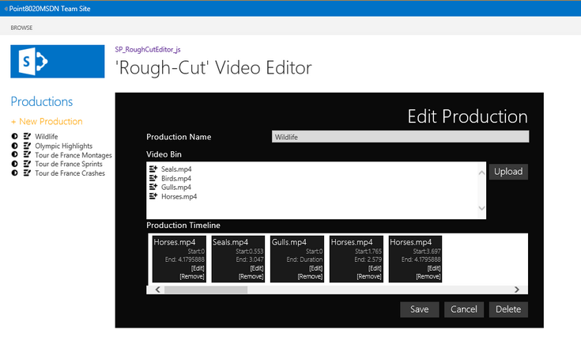

Demonstrates how to use JavaScript, jQuery, and the HTML5 video API in an app for SharePoint to edit HTML5 videos, and how to use a drag-and-drop operation to create new video productions from the edited clips.
Provided by: Martin Harwar, Point8020.com
You don't have to create new video files using expensive, difficult-to-use editing tools if you just want to re-purpose existing video content. Rough-cut is an industry-standard term for splicing together pieces of existing video footage to effectively create a new video or montage. Microsoft used this approach to enable broadcasters in the Winter Olympics to output event highlights and footage on their websites.
In this app, the user first adds a set of video files from a SharePoint library to the app's "video bin" and then selects one or more of those videos to put into the "production timeline." Once in the timeline, each video can be clipped with start and end times. The resulting production, composed of clips, is called a rough cut.
This app also demonstrates the use of a drag-and-drop operation to upload video files to a production, and to specify the order of clips within a new production. The app calls the HTML5 video APIs for choosing and playing selected frame sequences within an edited clip.
This solution is based on the SharePoint-hosted app template provided by Visual Studio 2012. The solution uses the JavaScript implementation of the client object model to read, create, update, and delete data from lists based on user actions. The lists included in this solution represent the original videos, definitions of new productions, and edited video clips in each production.
The lists are related to each other through lookup fields, and the user interface (UI) ensures that all data operations synchronize with their list items so that the relationships are maintained. The UI is implemented with HTML elements and cascading style sheet (CSS) styles to present a modern look and feel. JavaScript and jQuery are used to control all aspects of the UI, and the solution contains no server-side code.
Prerequisites
This sample requires the following:
-
Visual Studio 2012
-
Office Developer Tools for Visual Studio 2012
-
Either of the following:
-
Access to an Office 365 Enterprise site that has been configured to host apps (recommended).
-
SharePoint Server 2013 configured to host apps, and with a Developer Site Collection already created.
-
Key components
The sample app contains the following:
-
The Default.aspx webpage, which is used to create productions, manage videos clips on production timelines, and edit video clips on production timelines. This page is also used to play the productions.
-
The App.js file in the scripts folder, which is used to retrieve and manage production information and video clip data by using the JavaScript implementation of the client object model (JSOM). The App.js file also contains the UI logic that is implemented in Default.aspx.
-
The App.css file in the contents folder, which contains style definitions used by the elements in Default.aspx.
-
Two list definitions and instances: one for productions and one for the edited clips in the productions. The lists are linked together by lookup fields. A document library is also included to let the user upload videos for inclusion in productions.
-
All other files are automatically provided by the Visual Studio 2012 project template for apps for SharePoint, and they have not been modified in the development of this sample app.
Configure the sample
Follow these steps to configure the sample.
-
Open the SP_RoughCutEditor_js.sln file with Visual Studio 2012.
-
In the Properties window, add the full URL to your Office 365 Enterprise site or SharePoint Server 2013 Developer Site Collection to the Site URL property. You may be prompted to provide credentials if you have added a URL to an Office 365 site.
-
No other configuration is necessary.
Build, run, and test the sample
-
Press Ctrl+Shift+B to build the solution.
-
Press F5 to run the app.
-
Sign in to your SharePoint Server 2013 or Office 365 Enterprise site if you are prompted to do so by the browser.
-
When the app appears, the starting screen resembles Figure 1.
Figure 1. Start screen
 -
Click New Production to enter a new production name, as shown in Figure 2.
Figure 2. New Production form
 -
Figure 3 shows that five productions have been created.
Figure 3. New productions listed

-
Next to each production name is a button to edit the contents of the production, as shown in Figure 4.
Figure 4. Edit button for a production

-
Click the Edit button for a production to display its contents. Initially, there are no videos in a production. To add a video file, click the Upload button shown in Figure 5.
Figure 5. Edit Production form
 -
Click Upload to see the document library that is included in this app. This is a standard document library, so you can upload video files using any of the standard methods. Figure 6 shows how to use a drag-and-drop operation to upload four MP4 files from a local folder.
Figure 6. Uploading video files
 -
Figure 7 shows the four files that have been uploaded and are now listed in the Video Bin for a production. Next to each file name is an icon for adding the file to the current production's timeline.
Figure 7. Files in the Video Bin

-
Figure 8 shows that three videos have been added to the production timeline. Each video displays its current clip start and end times. By default, each video is included in its entirety. Click a video's [Edit] link to change the clip times, or [Remove] to remove a video from the timeline.
Figure 8. Video clips in the Production Timeline
 -
Figure 9 shows how you can re-order the videos in the production by using a drag-and-drop operation. In this case, the Seals.mp4 video is being moved from the end of the production to the second position.
Figure 9. Changing the order of video clips
 -
Click the [Edit] link for a video on the timeline to see the video. The video is rendered and paused as shown in Figure 10. You can then use the timeline sliders to set the start and end times for the clip. The video frames are displayed as you adjust the timeline sliders, which enables you to set the start and end times to exact frames. Click Save to save the current clip times and return to the Edit Production screen, as shown in Figure 10.
Figure 10. Editing a video clip timeline

-
Figure 11 shows how the start and end times for the Seals.mp4 clip have been applied. Click Save to save your changes to the production.
Figure 11. Revised clip in the Production Timeline

-
Next to each production name is a button to play the production, as shown in Figure 12.
Figure 12. Play button for a production

-
Click the play button for a production to see the clips on that production's timeline played in sequence, using the start and end times of each of those clips. The result is that it appears as if a new video has been created from subsets of multiple videos. This is a rough cut. Figure 13 shows an example screen shot.
Figure 13. Play a production

-
Figure 14 shows that you can add the same video to the production timeline more than once. In this case, the Horses.mp4 video has been added three times, where each instance presents different cuts of that video.
Figure 14. Multiple copies of a clip in the Production Timeline

Troubleshooting
Ensure that you have SharePoint Server 2013 properly configured to host apps (with a Developer Site Collection already created), or that you have signed up for an Office 365 Enterprise site configured to host apps.
Change log
|
Version |
Date |
|---|---|
|
First version |
July 2013 |